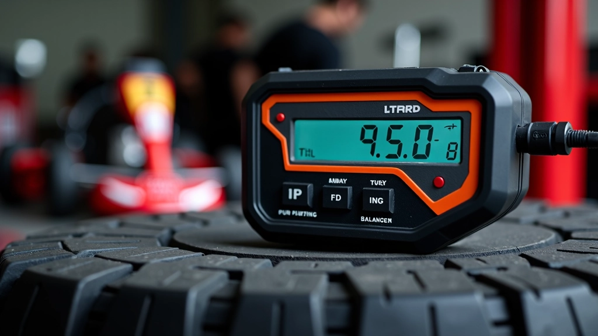
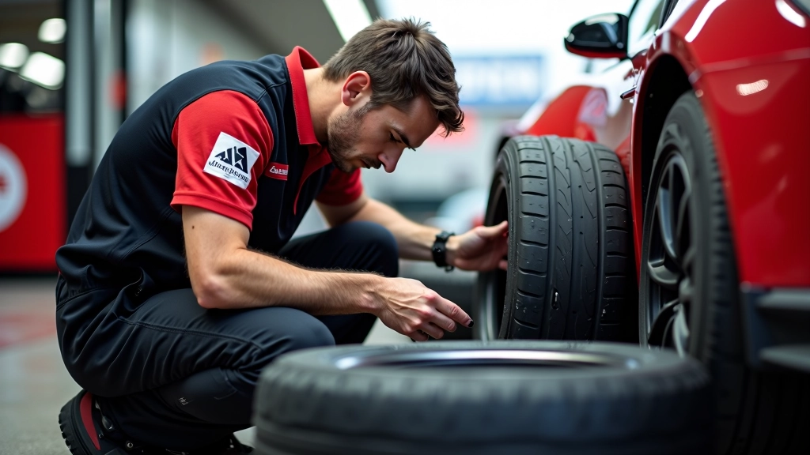
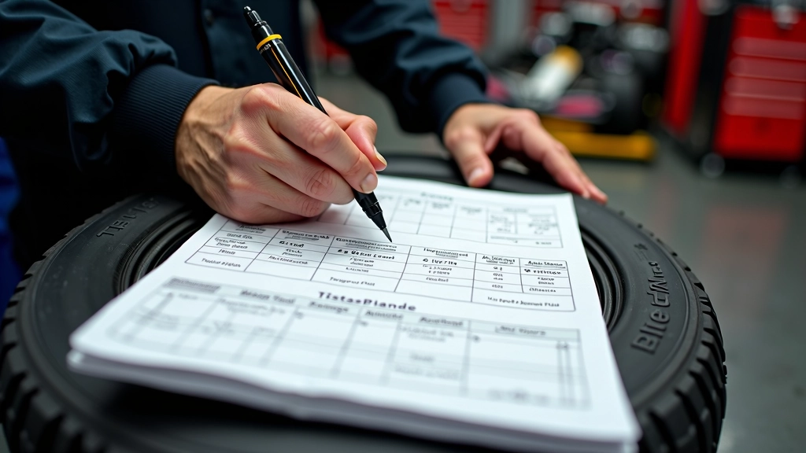
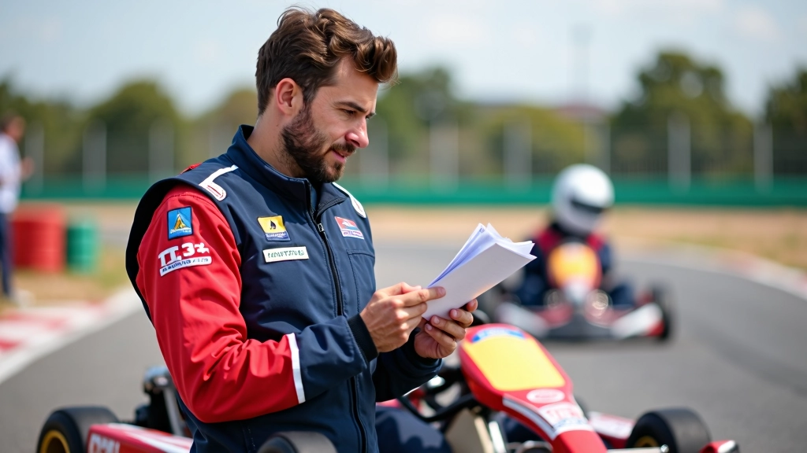

ضغط الإطارات وتأثيره على الأداء
تعلم كيفية قياس وتعديل ضغط الإطارات للحصول على أفضل التماسك والتوازن. الفرق بين الضغط البارد والساخن وتأثيره على سرعتك.


الكاتب
فريق جريب تراك التحريري
فريق التحرير والمراجعة
كتبه فريق جريب تراك التحريري، المتخصص في تقديم إرشادات عملية وموثوقة حول إدارة الإطارات والتماسك في الكارتينج.
لماذا ضغط الإطارات مهم؟
ضغط الإطارات هو أحد أهم العوامل التي تتحكم في أدائك على الحلبة. إنه ليس مجرد رقم على المقياس — إنه الفرق بين الدوران السريع والانجراف نحو الجدار.
عندما تكون الإطارات في الضغط الصحيح، تحصل على أفضل التماسك. الضغط منخفض جداً؟ ستشعر الإطارات بأنها طرية جداً وتفقد الاستقرار. مرتفع جداً؟ ستصبح صلبة جداً وتنزلق بسهولة.
الحقيقة أنه يجب عليك قياس ضغط الإطارات قبل كل جلسة تدريب وكل سباق. الضغط يتغير مع درجة الحرارة والاستخدام. تعلم كيفية القراءة والتعديل بسرعة — وستجد نفسك أسرع على المسار.

الضغط البارد مقابل الضغط الساخن

هنا تأتي النقطة المهمة جداً: يجب أن تقيس ضغط الإطارات عندما تكون باردة. باردة يعني قبل السباق مباشرة — عندما لم تكن الإطارات تعمل بعد.
لماذا؟ لأن الإطارات تسخن أثناء القيادة. الاحتكاك يرفع درجة الحرارة، ودرجة الحرارة ترفع الضغط. إذا قست الضغط وهي ساخنة، ستحصل على قراءة أعلى من الحقيقة. قد تعتقد أن ضغطك صحيح، لكن عندما تبرد الإطارات بعد السباق، ستكون منخفضة جداً.
المعيار: قس الضغط قبل كل جلسة. انتظر 10 دقائق على الأقل بعد القيادة قبل إعادة القياس. بهذه الطريقة تعرف الرقم الحقيقي.
خطوات القياس الصحيح
جهز الإطارات
تأكد من أن الكارت بارد. لم تقده للتو. الإطارات يجب أن تكون في درجة حرارة الغرفة تقريباً.
استخدم مقياس دقيق
لا تستخدم المقياس البسيط على المضخة. استثمر في مقياس رقمي دقيق. الفرق بـ 0.2 بار يؤثر على الأداء.
اضغط بقوة
ضع المقياس على الصمام بقوة. يجب أن تسمع صفير صغير. تأكد من أن الاتصال محكم — خلاف ذلك ستقرأ الضغط بشكل خاطئ.
اكتب الرقم
لا تعتمد على ذاكرتك. اكتب الضغط لكل إطار. أمامي، خلفي، يسار، يمين. سجل كل شيء.
الضغط المثالي والتعديل
الضغط المثالي يختلف حسب نوع الكارت والإطار والحلبة. لكن هناك نطاق عام يعمل بشكل جيد لمعظم الحالات: بين 0.8 و 1.0 بار للإطارات الأمامية، وبين 0.9 و 1.1 بار للخلفية.
ابدأ بالضغط الموصى به من الشركة المصنعة. ثم جرب. إذا شعرت أن الكارت ينزلق كثيراً، جرب ضغطاً أعلى قليلاً. إذا كان ثقيلاً جداً، قلل الضغط.
التعديلات الصغيرة تحدث فرقاً كبيراً. غيّر 0.1 بار واحد في المرة. لا تغير أكثر من ذلك. اختبر. قيس مرة أخرى. ثم قرر ما إذا كنت تريد تغييراً آخر.

قراءة نتائجك

عندما تنهي جلسة تدريب، قيس الضغط مرة أخرى بعد 10 دقائق. لاحظ الفرق بين البارد والساخن. هذا يخبرك عن كيفية عمل الإطارات.
إذا ارتفع الضغط كثيراً جداً (أكثر من 0.3 بار)، فقد تكون تسير بسرعة كبيرة أو الإطار به مشكلة. إذا لم يرتفع كثيراً، فالضغط الأولي ربما كان منخفضاً جداً.
بعد عدة جلسات، ستبدأ في رؤية النمط. ستعرف بالضبط ما يناسب أسلوب قيادتك وحالة الحلبة. هذا هو السر — الخبرة والملاحظة.
ملاحظة مهمة
هذا الدليل معلومات تعليمية لفهم أساسيات ضغط الإطارات. كل كارت وإطار مختلف، وكل حلبة لها ظروفها الخاصة. جرّب التعديلات بنفسك وراقب النتائج. إذا لم تكن متأكداً، اطلب مساعدة من فني متخصص أو مدرب كارتينج ذو خبرة.
الخلاصة
ضغط الإطارات ليس معقداً. لكنه مهم جداً. قس دائماً قبل القيادة. استخدم مقياساً دقيقاً. اكتب الأرقام. جرب التعديلات ببطء. راقب النتائج. بهذه الطريقة البسيطة، ستحصل على أفضل أداء من إطاراتك وستكون أسرع على المسار.